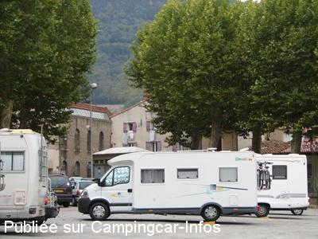

ASN = Aire de services avec stationnement nuit possible de :
MAZAMET
(N° 384)
Accès/adresse :
Rue Galibert Ferret
Lieu-dit Le Champ de la Ville
81200 MAZAMET
Lieu-dit Le Champ de la Ville
81200 MAZAMET
Latitude : (Nord) 43.49109° Décimaux ou 43° 29′ 27′′
Longitude : (Est) 2.37927° Décimaux ou 2° 22′ 45′′
Tarif : Gratuit
Type de borne : Plateforme
Services :


A proximité : tous commerces
Autres informations :
Aire ouverte toute l'année,
6 emplacements
Tel : 05 63 61 02 55

Le 03/10/2005 par J. Alexandre 09-2005
de
Roland 61
le 27/07/2014 :
stationnement sur une place en centre ville, difficile de circuler, rues étroites
stationnement sur une place en centre ville, difficile de circuler, rues étroites
de
J P Bedouet
le 22/06/2013 :
Accès compliqué ce 19 juin en raison de travaux dans certaines rues. Grand parking calme, mais très en pente.
Accès compliqué ce 19 juin en raison de travaux dans certaines rues. Grand parking calme, mais très en pente.
de
Guy83
le 23/07/2011 :
De passage récemment à Mazamet, nous avons aprécié ce stationnement (très bien fléché) où tout est gratuit. Petit bémol, vidange des eaux grises difficile, la grille n'est pas décentrée et si un vehicule est en stationnement à proximité, dur dur.
Pensez aux cales !
Merci à la commune !
De passage récemment à Mazamet, nous avons aprécié ce stationnement (très bien fléché) où tout est gratuit. Petit bémol, vidange des eaux grises difficile, la grille n'est pas décentrée et si un vehicule est en stationnement à proximité, dur dur.
Pensez aux cales !
Merci à la commune !
de
Michel
le 14/10/2010 :
De passage en Octobre à Mazamet, j'ai apprécié la tranquillité de cette petite ville, beaucoup de places pour stationner, malheureusement un peu en pente, et la prise d'eau n'est pas facile très petit débit, il faut appuyer sur le bouton toutes les 10 secondes mais enfin c'est GRATUIT alors Merci à MAZAMET. Je repasserai.
De passage en Octobre à Mazamet, j'ai apprécié la tranquillité de cette petite ville, beaucoup de places pour stationner, malheureusement un peu en pente, et la prise d'eau n'est pas facile très petit débit, il faut appuyer sur le bouton toutes les 10 secondes mais enfin c'est GRATUIT alors Merci à MAZAMET. Je repasserai.
de
cote philippe
le 10/06/2010 :
Une autre aire est à votre disposition au lac des montagnes, sur la RD 118 direction Carcassonne, à environ 6km de Mazamet, tout y est gratuit, l'eau propre, les eaux usées et vidange wc. Un endroit très calme, en bordure du lac. Merci aux communes de l'agglomération.
Une autre aire est à votre disposition au lac des montagnes, sur la RD 118 direction Carcassonne, à environ 6km de Mazamet, tout y est gratuit, l'eau propre, les eaux usées et vidange wc. Un endroit très calme, en bordure du lac. Merci aux communes de l'agglomération.
de
TITI03
le 28/04/2008 :
Pour l' eau pas de robinet à filetage, alors achat d'une prise voleuse dans les magasins de cc est très utile là ou ailleurs. a+
Pour l' eau pas de robinet à filetage, alors achat d'une prise voleuse dans les magasins de cc est très utile là ou ailleurs. a+
de
JohnL
le 20/08/2003 :
August 2003 - Basic but ok, difficult to find, from centre, head up hill for parking area and on right hand side. In centre of town.
August 2003 - Basic but ok, difficult to find, from centre, head up hill for parking area and on right hand side. In centre of town.